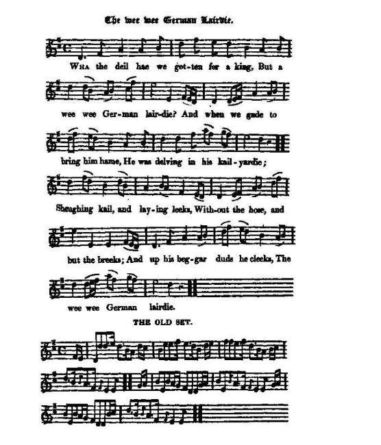

The Wee German Lairdie
Le petit lord teuton
King George I of Great Britain - 1714
Lyrics ascribed to (Texte attribué à) Allan Cunningham (1784-1842)

Tune - Mélodie
"The wee, wee German Lairdie", (new set by Hogg)
from Hogg's "Jacobite Reliques" part 1, N°51
Sequenced by Christian Souchon
|
In a note to this song Hoggs explains that "it is copied from
Cromek's Galloway and Nithdale Relics
, all save three lines taken from
an older collection
. [so that the ascription of the authorship to Allan Cunningham is justified]. It is sung to different tunes in different districts of the kingdom; but the one to which it is here set
was composed by me
a number of years bygone, and it having been sung so often to it, I found that, all over the south country, any other would have been reckoned spurious [!]
I have however, added the best original one that I could find, which, though perhaps scarcely so good a tune [charming modesty!] as the former is more in character. It is a capital song sung to either of these airs." Here is a variant to this "old set", first mentioned in Henry Robson's "Northern Minstrel's Budget", c. 1800, and sequenced by Lesley Nelson-Burns (see Links). |
Dans une note explicative, Hogg explique que ce chant "est tiré des
"Galloway and Nithdale Relics" de Cromeck
et provient, hormis 3 lignes, d'
un recueil plus ancien
[ce qui en justifie l'attribution à Allan Cunningham]. On le chante sur différentes mélodies dans les diverses parties du royaume, mais
je suis l'auteur
de celle qui est présentée ici. Je l'ai composée il y a plusieurs années et je me rends compte que dans tout le sud du pays, tout autre air semblerait inauthentique [!].
J'ai cependant ajouté le meilleur original que j'ai pu trouver, lequel bien que n'ayant sans doute pas les mêmes mérites [charmante modestie!], fait mieux ressortir le caractère propre du chant. Qu'on le chante sur l'une ou l'autre de ces mélodies, c'est un chant de premier ordre." Voici une variante de l'"ancienne version", mentionnée pour la première fois par Henry Robson vers 1800 dans sa "Northern Minstrel's Budget", dans l'arrangement composé par Lesley Nelson-Burns (voir liens). |
Remark: The tune to the song "What Marriment has ta'en the Whigs?" is also titled "The German Lairdie" .


|
THE WEE WEE GERMAN LAIRDIE
1. Wha the de'il ha'e we gotten for a king, But a wee wee German lairdie And when we gaed to bring him hame He was delving in his kail yairdie. He was sheughin' kail and laying leeks Without the hose and but the breeks, And up his beggard duds he cleeks, This wee wee German lairdie. 2. An he's clappit down in our guideman's chair The wee wee German lairdie And he's brought forth o' foreign trash, And dibbled them in his yairdie, He's pu'd the rose(1) o' English loons, And broken the harp(1) o' Irish clowns, But our Scots thistle(1) will jag his thumbs, The wee wee German lairdie. 3. Come up amang our Hielan hills Thou wee wee German lairdie, And see how the Stuart's lang kail thrives, That's dibbled in our yairdie: And if a shook ye daur to pu' Or haud the yokin' o' a plough, We'll break your sceptre owre your mou' Thou wee bit German lairdie. 4. Our hills are steep, our glens are deep Nae fittin' for any yairdie Our Northland thistles thou winna pu' Thou, wee bit German lairdie. We've the trenchin blades o' weir Wad prune you and your German gear We'se pass ye neath the claymore's shear Thou, feckless German lairdie. 5. Auld Scotland thou'rt owre cault a hold For nursin' siccan vermin; But the very dogs o' England's court They bark and howl in German. Then keep thy dibble in thy ain hand, Thy spade but and thy yairdie, For wha' the de'il now claims your land But a wee wee German lairdie! (1) Symbols of England, Ireland and Scotland |
LE PETIT LORD TEUTON
1. Ca mais, quel roi avons-nous donc? Un petit, petit lord teuton! Et quand on l'amena chez nous, Il était à planter ses choux. A biner et creuser des fosses Sans pourpoint et en hauts de chausses; Vite, il ajusta ses haillons, Ce petit, petit lord teuton. 2. Il trône dans notre salon, Le petit, petit lord teuton. L'ortie venue de l'étranger, Il la plante en son jardinet. Adieu la Rose (1), fous d'Anglais! La Harpe adieu, niais d'Irlandais! Mais prends garde à notre Chardon, O, petit, petit lord teuton! 3. Viens-t'en donc visiter nos Monts, Toi, petit, petit lord teuton, Viens voir pousser les choux des Stuarts, A la pointe de nos plantoirs: Et si tu touches à nos plants, Au bras des charrues dans nos champs, Gare à ton sceptre, à ton menton, O, petit, petit lord teuton! 4. Pente raide et val encaissé Ne conviennent à jardinet. Arracheras-tu nos chardons Toi, petit, petit lord teuton? Nous avons des lames tranchantes Pour émonder toutes tes plantes. Nos claymores, que nous te tondions, Vaurien de petit lord teuton. 5. Vieille Ecosse, crois-tu qu'il faille Entretenir cette racaille? Mais à Londres, même les chiens Aboient et hurlent en germain. Conserve donc tes instruments, Et vas donc bêcher dans ton champ! A qui diable ira notre fonds? Au petit, petit lord teuton! (1)Symboles de l'Angleterre, de l'Irlande et de l'Ecosse. (Trad. Ch.Souchon (c) 2003) |
|
George I of Great Britain (May 28, 1660 - June 11, 1727) was the first Hanoverian king of Great Britain (as well as King of Ireland) from August 1, 1714, to June 11, 1727. George did not speak English -- he spoke German and was ridiculed by many of his subjects for this and the harem of German women he maintained, earning him the nickname
Geordie Whelps
.
He was the son of the Electress Sophia of Hanover who was a granddaughter of King James I of England (cf Genealogy ). In 1682, he married Sophia Dorothea, Princess of Zelle, and they had two children.: King George II of Great Britain - (November 10, 1683 - October 25, 1760). Sophia Dorothea, later Queen consort of Prussia - (March 16, 1686 - June 28, 1757). George was elector of Hanover from 1698 until his death in 1727. George divorced Sophia in 1694 for allegedly committing adultery with Count von Konigsmarck (cf Came ye o'er frae France ).He had her imprisoned until her death in 1726. Their daughter, Sophia Dorothea, would be the mother of King Frederick II of Prussia, known as Frederick the Great. As a consequence of the Act of Settlement (1701) and the Act of Union (1707) (cf "Sic a Parcel of Rogues" ), George inherited the throne on Queen Anne's death on August 1, 1714. He divided his time between Britain and his other territory of Hanover.
The super-civilized Houyhnhnms of Jonathan Swift arose from the king's comment that his stable housed smarter beings than his English court; He claimed to communicate in German with his horses. The horse comment came about because of a failed experiment where all parties REALLY tried to compromise by conducting a session of Parliament in French.
|
Georges Ier (28 mai 1660 - 11 juin 1727) fut le premier souverain hanovrien à régner sur la Grande Bretagne (ainsi que sur l'Irlande) du 1er août 1714 au 11 juin 1727. On se moquait de lui parce qu'il parlait allemand et non anglais et qu'il était entouré d'un harem germanique, ce qui lui valut le surnom de
"Geordie Whelps"
(Le Guelfe et le Chiot).
Fils de l'Electrice Sophie de Hanovre, elle-même petite-fille de Jacques Ier Stuart (cf Généalogie ), il avait épousé en 1682 la Princesse Sophie Dorothée de Zelle dont il eut deux enfants: le Roi Georges II de Grande Bretagne - (10 novembre 1683 - 25 octobre 1760) et Sophie Dorothée, future Reine Consort de Prusse - (16 mars 1686 - 28 juin 1757). Georges fut Electeur de Hanovre de 1698 jusqu'à sa mort en 1727. Il répudia Sophie en 1694, qu'il accusait d'avoir commis l'adultère avec le Comte de Koenigsmarck (cf Came ye o'er frae France ) et la fit emprisonner jusqu'à sa mort en 1726. Leur fille, Sophie Dorothée, devait être la mère du roi de Prusse Frédéric II, le fameux Frédéric le Grand. En application de l' "Acte de dévolution" (1701) et de l'"Acte d' Union" (1707) (cf "Sic a Parcel of Rogues" ), Georges hérita du trône à la mort de la Reine Anne, le 1er août 1714. Il répartit son temps entre la Grande Bretagne et Hanovre.
Les très raffinés "Houyhnhnms" de Jonathan Swift sont nés d'une remarque du roi selon laquelle ses écuries abritaient des êtres plus civilisés que la Cour d'Angleterre. Il se flattait de parler à ses chevaux en allemand, à la suite d'une AUTHENTIQUE tentative avortée de tenir, en français à titre de compromis, une séance du Parlement.
|